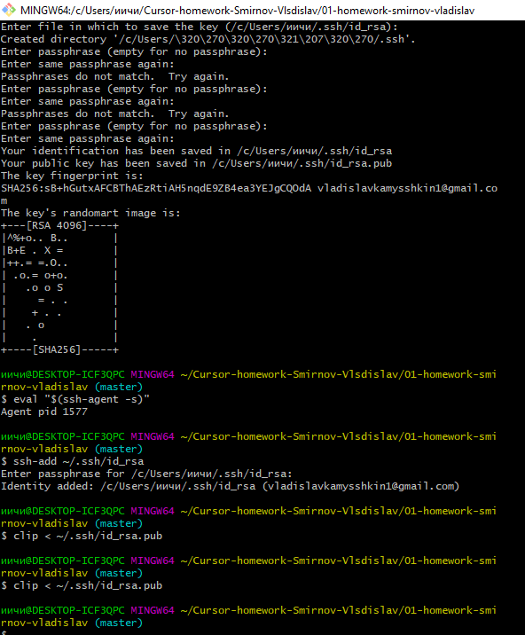

Шпаргалка по Git
Base
- "git config --global user.name blabla" - задает глобальное имя пользователя;
- "git config --global user.email blabal@bla" - задает глобальный имейл;
- "git init" - инициирует пустой репозиторий в текущей дериктории;
- "git status" - инструмент используемый для определения какие файлы в каком состоянии находяться;
- "git add" - при помощи этой комманды мы добавляем файлы в коммит;
- "git commit" - при помощи этой комманды мы сохраняем изменения;
- "git log" - просмотр и изучение истории файлов проекта;
- "git checkout" - переключает на вибранную ветку и обновляет директорию до её состояния;
- "git branch" - создает новую ветку;
- "git push" - загружает все изменения локальной ветки в удаленный репозиторий;
- "git pull" - Загружает историю из удалённого репозитория и объединяет её с локальной;
- "git merge" - объединяет ветки;
- "git clone" - викачивает репозиторий со всей историей изменений;
.gitignore Файл
".gitignore" - это файл при помощи которого от системы контроля версий Git можно спрятать файлы.
Advanced
- "git revert" - восстанавливает коммит путем создания нового, изменения в нем противоположны коммиту, который нужно отменить;
- "git reset" - Отменяет индексацию указанного файла, при этом сохраняет его содержимое;
- "git rebase" - с помощью этой комманды, мы можем взять все комиты из одной ветки и в том же порядке применить их к другой;
- "git cherry-pick" - эта комманда берёт изменения, вносимые одним коммитом, и пытается повторно применить их в
виде нового коммита в текущей ветке. Эта возможность полезна в ситуации, когда нужно забрать парочку коммитов из другой ветки, а не сливать ветку целиком со всеми внесенными в нее изменениями;
- "git stash" - эта комманда предназначена для того, чтобы поместить текущие изменения, которые вы выполнили в файлах, в отдельное
хранилище, и вернуть файлы к исходному состоянию. То есть git stash прячет изменения в файлах и сохраняет эти изменения отдельно, чтобы потом можно было их вернуть.;
Подключение GitHub через SSH:
